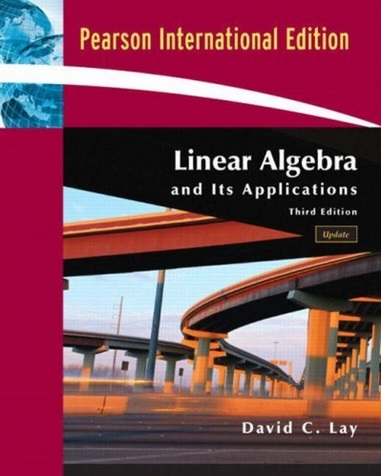

Linear Algebra and Its Applications
By David C. Lay. (Third Edition)

These are my proposed solutions. If you find any mistakes, please let me know.
Chapter 1 - Discrete Probability Distributions
1.1 - Systems of Linear Equations
1.2 - Row Reduction and Echelon Forms
1.3 - Vector Equations
1.4 - The Matrix Equations Ax = b
1.5 - Solution Sets of Linear Systems
1.6 - Applications of Linear Systems
1.7 - Linear Independence
1.8 - Introduction to Linear Transformations
1.9 - The Matrix of a Linear Transformation
1.10 - Linear Models in Business, Science and Engineering
Chapter 2 - Matrix Algebra
2.1 - Matrix Operations
2.2 - The Inverse of a Matrix
2.3 - Characterization of Invertible Matrices
2.4 - Partitioned Matrices
2.5 - Matrix Factorizations
2.6 - The Leontief Input-Output Model
2.7 - Application to Computer Graphics
2.8 - Subspaces of Rn
2.9 - Dimension and Rank